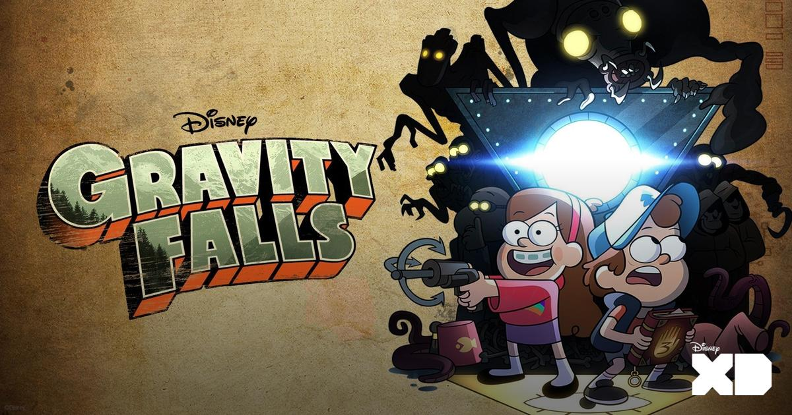
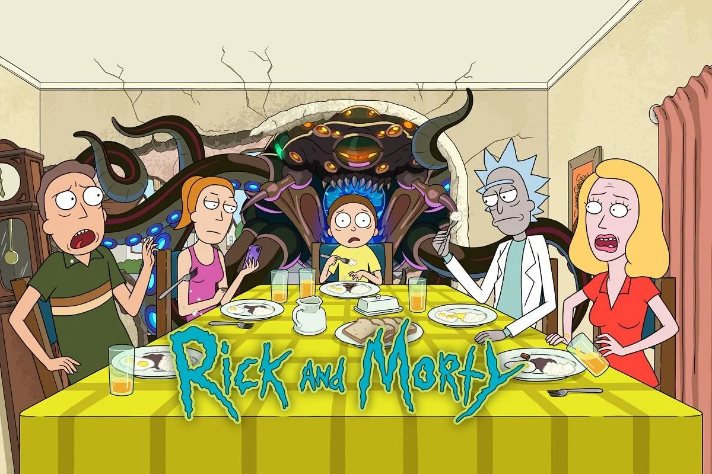
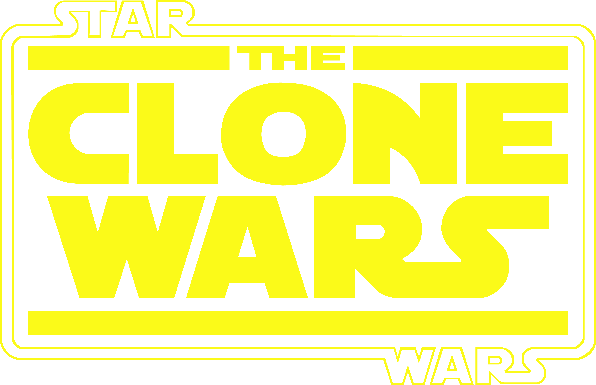
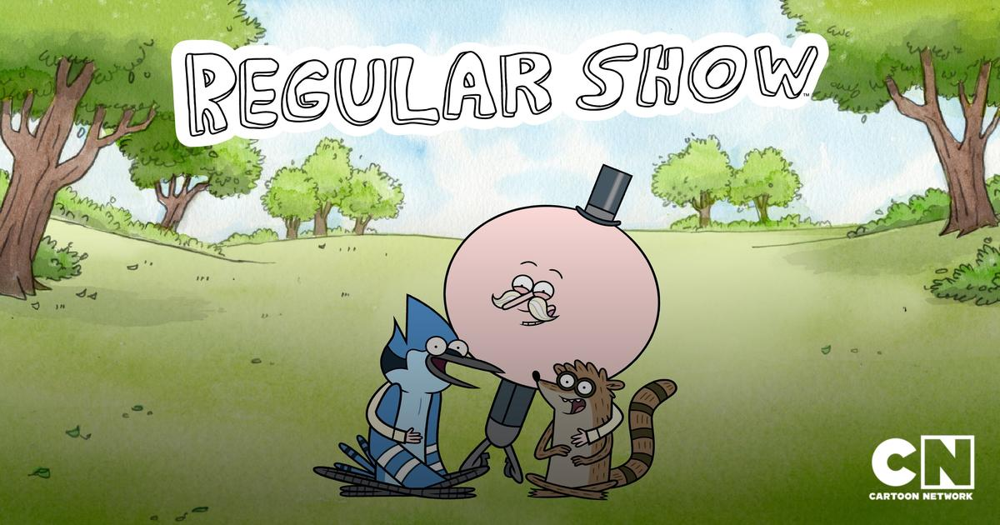
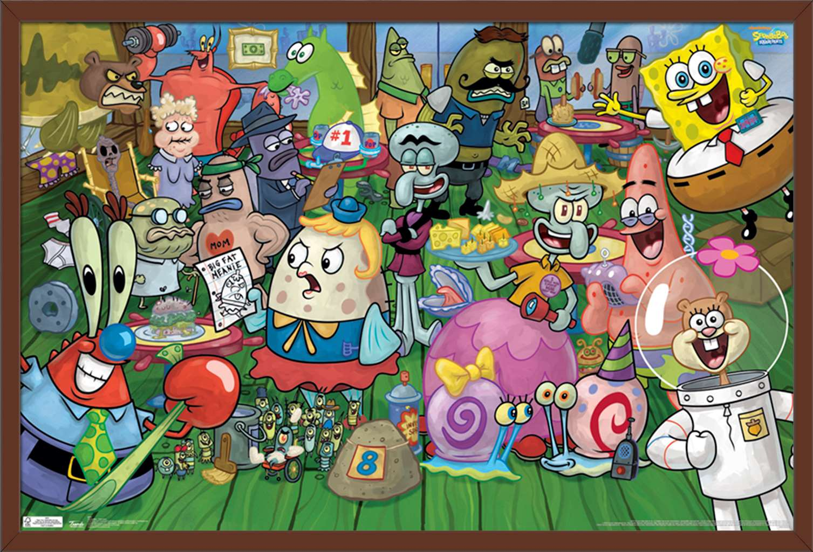

Congratulations you have been given Gravity Falls. The beloved Disney channel show is about the adventures of twins Dipper and Mabel as they explore the mysteries of a town called Gravity Falls. The show is good for people of all ages, meta comedy, and a brilliant overarching story. The show has many memorable side characters and creatures and captures the feeling of summer. The show has a great fanbase and the episodes contain little messages that the community come together to decipher. Available on Disney+.

Congratulations you have been given Rick and Morty. It is the hit Sci fi show about a boy and his grandpa traveling the universe. The show is for a mature audience and has a mix of dark and obscene humor. We think this is for you because it deals with themes of isolation, intelligence, alcoholism, and family. The sci-fi has some of the smartest concepts compared to most shows. The show can be watched in sequence or in any order for most episodes. Available on HBOMax.



Congratulations you have been given Clone Wars. Clone Wars is the anthology series that takes place in between episode 2 and 3 of the Star Wars Saga. There are 7 seasons that deal with mature themes and character growth. You'll like this for the war stories and characters that you'll come to bond with. If you like Clone Wars there are even two spin off shows that you can watch if you are craving more star wars content. Available on Disney+

The show we recommend for you is: Sailor Moon! Sailor Moon is an anime about school girl Usagi Tsukino. Usagi meets a magical talking cat named Luna who gives her the power to transform into a magical alter ego known as Sailor Moon. Usagi and a few other Sailor Soldiers who join her along the way battle against the Dark Kingdom in a quest to obtain the Silver Crystal, a gem capable of limitless power. Sailor Moon is available on Hulu.


The show we recommend for you is: Steven Universe! Steven Universe is a coming of age show about Steven and the three alien gem warriors he lives with. Together, they fight to protect the Earth from forces beyond the stars white Steven struggles to discover who he really is. This feel good show full of adventure and catchy songs is sure to appeal to your taste! This show is available on Hulu and HBO Max.


Congratulations you have been given Arcane. Arcane is based on the hit MOBA game League of Legends. It's a multilayered show with themes about class conflict, sisterhood, and addiction. The animation style is similar to Into the Spiderverse. We believe it fits you because it is a good binge for a compelling story. The complex characters make for an interesting story. If you play the game this is definitely a must watch. Available on Netflix.


The show we recommend for you is: Regular Show! This show is about two friends, a blue jay named Mordecai and a raccoon named Rigby. They are groundskeepers at a park who love to slack off and not do their work. Their everyday problems often lead to out of this world adventures. Regular Show is available on Hulu and HBO MAX.

The show we recommend for you is: The Midnight Gospel! This show is about Clancy who is a spacecaster (space podcaster). He has a multiverse simulator which he uses to travel to different worlds and interview people. This show is targeted towards adults, and is available on Netflix.


The show we recommend for you is: One Piece! One piece is an anime about Monkey D. Luffy, and his quest to find the mythical treasure known as the One Piece, and in the process become the King of the Pirates. One Piece is available on Netflix, Hulu, Crunchyroll, and Funimation.


Congratulations you got Spongebob. Everyone knows Spongebob. The hit nickelodeon show has been playing for decades. With very memorable episodes and quotable lines it is beloved by all. The show is also known for its memes. Available on Amazon Prime.
